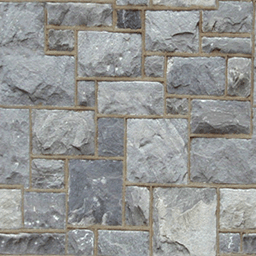
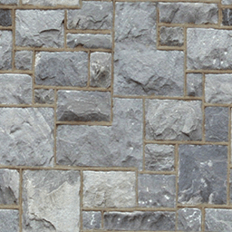
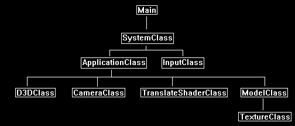

Texture translation is the technique used to animate a texture moving over a polygon surface.
This tutorial will cover how to implement texture translation using DirectX 11 and HLSL.
The code in this tutorial is based on the previous tutorials.
As discussed in the texturing tutorial we use UV coordinates to map textures to polygons.
The UV coordinates translate to X and Y coordinates with X going horizontally across the polygon face and Y going vertically across the polygon face.
To implement texture translation, we must modify the X and Y coordinate of the texture in the pixel shader.
We can do this by simply adding or subtracting a value between 0 and 1 to either the X or Y coordinate.
For example, we have the following texture mapped to the polygon:

We then add 0.5 to the texture X coordinate in the pixel shader and it translates the texture coordinates over by half:

Framework
The frame work has been updated to include the new TranslateShaderClass.

Translate.vs
The translate vertex shader is the same as the texture vertex shader.
////////////////////////////////////////////////////////////////////////////////
// Filename: translate.vs
////////////////////////////////////////////////////////////////////////////////
/////////////
// GLOBALS //
/////////////
cbuffer MatrixBuffer
{
matrix worldMatrix;
matrix viewMatrix;
matrix projectionMatrix;
};
//////////////
// TYPEDEFS //
//////////////
struct VertexInputType
{
float4 position : POSITION;
float2 tex : TEXCOORD0;
};
struct PixelInputType
{
float4 position : SV_POSITION;
float2 tex : TEXCOORD0;
};
////////////////////////////////////////////////////////////////////////////////
// Vertex Shader
////////////////////////////////////////////////////////////////////////////////
PixelInputType TranslateVertexShader(VertexInputType input)
{
PixelInputType output;
// Change the position vector to be 4 units for proper matrix calculations.
input.position.w = 1.0f;
// Calculate the position of the vertex against the world, view, and projection matrices.
output.position = mul(input.position, worldMatrix);
output.position = mul(output.position, viewMatrix);
output.position = mul(output.position, projectionMatrix);
// Store the texture coordinates for the pixel shader.
output.tex = input.tex;
return output;
}
Translate.ps
////////////////////////////////////////////////////////////////////////////////
// Filename: translate.ps
////////////////////////////////////////////////////////////////////////////////
/////////////
// GLOBALS //
/////////////
Texture2D shaderTexture : register(t0);
SamplerState SampleType : register(s0);
We add a new buffer with a float variable called textureTranslation.
This is set in the applicationclass.cpp during the Render call to update the position of the texture translation.
The value set here will be between 0 and 1.
cbuffer TranslationBuffer
{
float textureTranslation;
};
//////////////
// TYPEDEFS //
//////////////
struct PixelInputType
{
float4 position : SV_POSITION;
float2 tex : TEXCOORD0;
};
The pixel shader is where we do the work of translating the texture coordinate by the textureTranslation amount.
We take the input texture coordinate and add the translation amount for each pixel shader call.
This will uniformly translate the texture across the polygon face.
////////////////////////////////////////////////////////////////////////////////
// Pixel Shader
////////////////////////////////////////////////////////////////////////////////
float4 TranslatePixelShader(PixelInputType input) : SV_TARGET
{
float4 textureColor;
// Translate the position where we sample the pixel from.
input.tex.x += textureTranslation;
// Sample the pixel color from the texture using the sampler at this texture coordinate location.
textureColor = shaderTexture.Sample(SampleType, input.tex);
return textureColor;
}
Translateshaderclass.h
The TranslateShaderClass is just the TextureShaderClass with extra functionality for texture translation.
////////////////////////////////////////////////////////////////////////////////
// Filename: translateshaderclass.h
////////////////////////////////////////////////////////////////////////////////
#ifndef _TRANSLATESHADERCLASS_H_
#define _TRANSLATESHADERCLASS_H_
//////////////
// INCLUDES //
//////////////
#include <d3d11.h>
#include <d3dcompiler.h>
#include <directxmath.h>
#include <fstream>
using namespace DirectX;
using namespace std;
////////////////////////////////////////////////////////////////////////////////
// Class name: TranslateShaderClass
////////////////////////////////////////////////////////////////////////////////
class TranslateShaderClass
{
private:
struct MatrixBufferType
{
XMMATRIX world;
XMMATRIX view;
XMMATRIX projection;
};
This is the new structure type for the texture translation buffer.
We add padding to ensure that the structure is always a multiple of 16.
struct TranslateBufferType
{
float translation;
XMFLOAT3 padding;
};
public:
TranslateShaderClass();
TranslateShaderClass(const TranslateShaderClass&);
~TranslateShaderClass();
bool Initialize(ID3D11Device*, HWND);
void Shutdown();
bool Render(ID3D11DeviceContext*, int, XMMATRIX, XMMATRIX, XMMATRIX, ID3D11ShaderResourceView*, float);
private:
bool InitializeShader(ID3D11Device*, HWND, WCHAR*, WCHAR*);
void ShutdownShader();
void OutputShaderErrorMessage(ID3D10Blob*, HWND, WCHAR*);
bool SetShaderParameters(ID3D11DeviceContext*, XMMATRIX, XMMATRIX, XMMATRIX, ID3D11ShaderResourceView*, float);
void RenderShader(ID3D11DeviceContext*, int);
private:
ID3D11VertexShader* m_vertexShader;
ID3D11PixelShader* m_pixelShader;
ID3D11InputLayout* m_layout;
ID3D11Buffer* m_matrixBuffer;
ID3D11SamplerState* m_sampleState;
We add a new buffer pointer for the texture translation buffer.
ID3D11Buffer* m_translateBuffer;
};
#endif
Translateshaderclass.cpp
////////////////////////////////////////////////////////////////////////////////
// Filename: translateshaderclass.cpp
////////////////////////////////////////////////////////////////////////////////
#include "translateshaderclass.h"
TranslateShaderClass::TranslateShaderClass()
{
m_vertexShader = 0;
m_pixelShader = 0;
m_layout = 0;
m_matrixBuffer = 0;
m_sampleState = 0;
Initialize the texture translation buffer to null in the class constructor.
m_translateBuffer = 0;
}
TranslateShaderClass::TranslateShaderClass(const TranslateShaderClass& other)
{
}
TranslateShaderClass::~TranslateShaderClass()
{
}
bool TranslateShaderClass::Initialize(ID3D11Device* device, HWND hwnd)
{
bool result;
wchar_t vsFilename[128];
wchar_t psFilename[128];
int error;
Load the texture translate shader HLSL files.
// Set the filename of the vertex shader.
error = wcscpy_s(vsFilename, 128, L"../Engine/translate.vs");
if(error != 0)
{
return false;
}
// Set the filename of the pixel shader.
error = wcscpy_s(psFilename, 128, L"../Engine/translate.ps");
if(error != 0)
{
return false;
}
// Initialize the vertex and pixel shaders.
result = InitializeShader(device, hwnd, vsFilename, psFilename);
if(!result)
{
return false;
}
return true;
}
void TranslateShaderClass::Shutdown()
{
// Shutdown the vertex and pixel shaders as well as the related objects.
ShutdownShader();
return;
}
The Render function now takes as input the translation value to be used for translating the texture in the pixel shader.
It then sends that value into the SetShaderParameters function so that it is set before rendering.
bool TranslateShaderClass::Render(ID3D11DeviceContext* deviceContext, int indexCount, XMMATRIX worldMatrix, XMMATRIX viewMatrix,
XMMATRIX projectionMatrix, ID3D11ShaderResourceView* texture, float translation)
{
bool result;
// Set the shader parameters that it will use for rendering.
result = SetShaderParameters(deviceContext, worldMatrix, viewMatrix, projectionMatrix, texture, translation);
if(!result)
{
return false;
}
// Now render the prepared buffers with the shader.
RenderShader(deviceContext, indexCount);
return true;
}
bool TranslateShaderClass::InitializeShader(ID3D11Device* device, HWND hwnd, WCHAR* vsFilename, WCHAR* psFilename)
{
HRESULT result;
ID3D10Blob* errorMessage;
ID3D10Blob* vertexShaderBuffer;
ID3D10Blob* pixelShaderBuffer;
D3D11_INPUT_ELEMENT_DESC polygonLayout[2];
unsigned int numElements;
D3D11_BUFFER_DESC matrixBufferDesc;
D3D11_SAMPLER_DESC samplerDesc;
D3D11_BUFFER_DESC translateBufferDesc;
// Initialize the pointers this function will use to null.
errorMessage = 0;
vertexShaderBuffer = 0;
pixelShaderBuffer = 0;
Load the texture translate vertex shader.
// Compile the vertex shader code.
result = D3DCompileFromFile(vsFilename, NULL, NULL, "TranslateVertexShader", "vs_5_0", D3D10_SHADER_ENABLE_STRICTNESS, 0,
&vertexShaderBuffer, &errorMessage);
if(FAILED(result))
{
// If the shader failed to compile it should have writen something to the error message.
if(errorMessage)
{
OutputShaderErrorMessage(errorMessage, hwnd, vsFilename);
}
// If there was nothing in the error message then it simply could not find the shader file itself.
else
{
MessageBox(hwnd, vsFilename, L"Missing Shader File", MB_OK);
}
return false;
}
Load the texture translate pixel shader.
// Compile the pixel shader code.
result = D3DCompileFromFile(psFilename, NULL, NULL, "TranslatePixelShader", "ps_5_0", D3D10_SHADER_ENABLE_STRICTNESS, 0,
&pixelShaderBuffer, &errorMessage);
if(FAILED(result))
{
// If the shader failed to compile it should have writen something to the error message.
if(errorMessage)
{
OutputShaderErrorMessage(errorMessage, hwnd, psFilename);
}
// If there was nothing in the error message then it simply could not find the file itself.
else
{
MessageBox(hwnd, psFilename, L"Missing Shader File", MB_OK);
}
return false;
}
// Create the vertex shader from the buffer.
result = device->CreateVertexShader(vertexShaderBuffer->GetBufferPointer(), vertexShaderBuffer->GetBufferSize(), NULL, &m_vertexShader);
if(FAILED(result))
{
return false;
}
// Create the pixel shader from the buffer.
result = device->CreatePixelShader(pixelShaderBuffer->GetBufferPointer(), pixelShaderBuffer->GetBufferSize(), NULL, &m_pixelShader);
if(FAILED(result))
{
return false;
}
// Create the vertex input layout description.
polygonLayout[0].SemanticName = "POSITION";
polygonLayout[0].SemanticIndex = 0;
polygonLayout[0].Format = DXGI_FORMAT_R32G32B32_FLOAT;
polygonLayout[0].InputSlot = 0;
polygonLayout[0].AlignedByteOffset = 0;
polygonLayout[0].InputSlotClass = D3D11_INPUT_PER_VERTEX_DATA;
polygonLayout[0].InstanceDataStepRate = 0;
polygonLayout[1].SemanticName = "TEXCOORD";
polygonLayout[1].SemanticIndex = 0;
polygonLayout[1].Format = DXGI_FORMAT_R32G32_FLOAT;
polygonLayout[1].InputSlot = 0;
polygonLayout[1].AlignedByteOffset = D3D11_APPEND_ALIGNED_ELEMENT;
polygonLayout[1].InputSlotClass = D3D11_INPUT_PER_VERTEX_DATA;
polygonLayout[1].InstanceDataStepRate = 0;
// Get a count of the elements in the layout.
numElements = sizeof(polygonLayout) / sizeof(polygonLayout[0]);
// Create the vertex input layout.
result = device->CreateInputLayout(polygonLayout, numElements, vertexShaderBuffer->GetBufferPointer(),
vertexShaderBuffer->GetBufferSize(), &m_layout);
if(FAILED(result))
{
return false;
}
// Release the vertex shader buffer and pixel shader buffer since they are no longer needed.
vertexShaderBuffer->Release();
vertexShaderBuffer = 0;
pixelShaderBuffer->Release();
pixelShaderBuffer = 0;
// Setup the description of the dynamic matrix constant buffer that is in the vertex shader.
matrixBufferDesc.Usage = D3D11_USAGE_DYNAMIC;
matrixBufferDesc.ByteWidth = sizeof(MatrixBufferType);
matrixBufferDesc.BindFlags = D3D11_BIND_CONSTANT_BUFFER;
matrixBufferDesc.CPUAccessFlags = D3D11_CPU_ACCESS_WRITE;
matrixBufferDesc.MiscFlags = 0;
matrixBufferDesc.StructureByteStride = 0;
// Create the constant buffer pointer so we can access the vertex shader constant buffer from within this class.
result = device->CreateBuffer(&matrixBufferDesc, NULL, &m_matrixBuffer);
if(FAILED(result))
{
return false;
}
// Create a texture sampler state description.
samplerDesc.Filter = D3D11_FILTER_MIN_MAG_MIP_LINEAR;
samplerDesc.AddressU = D3D11_TEXTURE_ADDRESS_WRAP;
samplerDesc.AddressV = D3D11_TEXTURE_ADDRESS_WRAP;
samplerDesc.AddressW = D3D11_TEXTURE_ADDRESS_WRAP;
samplerDesc.MipLODBias = 0.0f;
samplerDesc.MaxAnisotropy = 1;
samplerDesc.ComparisonFunc = D3D11_COMPARISON_ALWAYS;
samplerDesc.BorderColor[0] = 0;
samplerDesc.BorderColor[1] = 0;
samplerDesc.BorderColor[2] = 0;
samplerDesc.BorderColor[3] = 0;
samplerDesc.MinLOD = 0;
samplerDesc.MaxLOD = D3D11_FLOAT32_MAX;
// Create the texture sampler state.
result = device->CreateSamplerState(&samplerDesc, &m_sampleState);
if(FAILED(result))
{
return false;
}
Create the translate buffer so we have an interface to setting the texture translation value in the pixel shader.
// Setup the description of the texture translation dynamic constant buffer that is in the pixel shader.
translateBufferDesc.Usage = D3D11_USAGE_DYNAMIC;
translateBufferDesc.ByteWidth = sizeof(TranslateBufferType);
translateBufferDesc.BindFlags = D3D11_BIND_CONSTANT_BUFFER;
translateBufferDesc.CPUAccessFlags = D3D11_CPU_ACCESS_WRITE;
translateBufferDesc.MiscFlags = 0;
translateBufferDesc.StructureByteStride = 0;
// Create the constant buffer pointer so we can access the pixel shader constant buffer from within this class.
result = device->CreateBuffer(&translateBufferDesc, NULL, &m_translateBuffer);
if(FAILED(result))
{
return false;
}
return true;
}
void TranslateShaderClass::ShutdownShader()
{
Release the new translate buffer in the ShutdownShader function.
// Release the texture translation constant buffer.
if(m_translateBuffer)
{
m_translateBuffer->Release();
m_translateBuffer = 0;
}
// Release the sampler state.
if(m_sampleState)
{
m_sampleState->Release();
m_sampleState = 0;
}
// Release the matrix constant buffer.
if(m_matrixBuffer)
{
m_matrixBuffer->Release();
m_matrixBuffer = 0;
}
// Release the layout.
if(m_layout)
{
m_layout->Release();
m_layout = 0;
}
// Release the pixel shader.
if(m_pixelShader)
{
m_pixelShader->Release();
m_pixelShader = 0;
}
// Release the vertex shader.
if(m_vertexShader)
{
m_vertexShader->Release();
m_vertexShader = 0;
}
return;
}
void TranslateShaderClass::OutputShaderErrorMessage(ID3D10Blob* errorMessage, HWND hwnd, WCHAR* shaderFilename)
{
char* compileErrors;
unsigned long long bufferSize, i;
ofstream fout;
// Get a pointer to the error message text buffer.
compileErrors = (char*)(errorMessage->GetBufferPointer());
// Get the length of the message.
bufferSize = errorMessage->GetBufferSize();
// Open a file to write the error message to.
fout.open("shader-error.txt");
// Write out the error message.
for(i=0; i<bufferSize; i++)
{
fout << compileErrors[i];
}
// Close the file.
fout.close();
// Release the error message.
errorMessage->Release();
errorMessage = 0;
// Pop a message up on the screen to notify the user to check the text file for compile errors.
MessageBox(hwnd, L"Error compiling shader. Check shader-error.txt for message.", shaderFilename, MB_OK);
return;
}
bool TranslateShaderClass::SetShaderParameters(ID3D11DeviceContext* deviceContext, XMMATRIX worldMatrix, XMMATRIX viewMatrix,
XMMATRIX projectionMatrix, ID3D11ShaderResourceView* texture, float translation)
{
HRESULT result;
D3D11_MAPPED_SUBRESOURCE mappedResource;
MatrixBufferType* dataPtr;
unsigned int bufferNumber;
TranslateBufferType* dataPtr2;
// Transpose the matrices to prepare them for the shader.
worldMatrix = XMMatrixTranspose(worldMatrix);
viewMatrix = XMMatrixTranspose(viewMatrix);
projectionMatrix = XMMatrixTranspose(projectionMatrix);
// Lock the constant buffer so it can be written to.
result = deviceContext->Map(m_matrixBuffer, 0, D3D11_MAP_WRITE_DISCARD, 0, &mappedResource);
if(FAILED(result))
{
return false;
}
// Get a pointer to the data in the constant buffer.
dataPtr = (MatrixBufferType*)mappedResource.pData;
// Copy the matrices into the constant buffer.
dataPtr->world = worldMatrix;
dataPtr->view = viewMatrix;
dataPtr->projection = projectionMatrix;
// Unlock the constant buffer.
deviceContext->Unmap(m_matrixBuffer, 0);
// Set the position of the constant buffer in the vertex shader.
bufferNumber = 0;
// Finally set the constant buffer in the vertex shader with the updated values.
deviceContext->VSSetConstantBuffers(bufferNumber, 1, &m_matrixBuffer);
// Set shader texture resource in the pixel shader.
deviceContext->PSSetShaderResources(0, 1, &texture);
Here is where we set the texture translation value in the pixel shader.
We first lock the texture translation constant buffer and then copy the translation value into the buffer.
After that we unlock the buffer and set the constant buffer in the pixel shader.
// Lock the texture translation constant buffer so it can be written to.
result = deviceContext->Map(m_translateBuffer, 0, D3D11_MAP_WRITE_DISCARD, 0, &mappedResource);
if(FAILED(result))
{
return false;
}
// Get a pointer to the data in the texture translation constant buffer.
dataPtr2 = (TranslateBufferType*)mappedResource.pData;
// Copy the translation value into the texture translation constant buffer.
dataPtr2->translation = translation;
// Unlock the buffer.
deviceContext->Unmap(m_translateBuffer, 0);
// Set the position of the texture translation constant buffer in the pixel shader.
bufferNumber = 0;
// Now set the texture translation constant buffer in the pixel shader with the updated values.
deviceContext->PSSetConstantBuffers(bufferNumber, 1, &m_translateBuffer);
return true;
}
void TranslateShaderClass::RenderShader(ID3D11DeviceContext* deviceContext, int indexCount)
{
// Set the vertex input layout.
deviceContext->IASetInputLayout(m_layout);
// Set the vertex and pixel shaders that will be used to render this triangle.
deviceContext->VSSetShader(m_vertexShader, NULL, 0);
deviceContext->PSSetShader(m_pixelShader, NULL, 0);
// Set the sampler state in the pixel shader.
deviceContext->PSSetSamplers(0, 1, &m_sampleState);
// Render the geometry.
deviceContext->DrawIndexed(indexCount, 0, 0);
return;
}
Applicationclass.h
The ApplicationClass has the translateshaderclass.h included and a new TranslateShaderClass variable.
////////////////////////////////////////////////////////////////////////////////
// Filename: applicationclass.h
////////////////////////////////////////////////////////////////////////////////
#ifndef _APPLICATIONCLASS_H_
#define _APPLICATIONCLASS_H_
///////////////////////
// MY CLASS INCLUDES //
///////////////////////
#include "d3dclass.h"
#include "inputclass.h"
#include "cameraclass.h"
#include "modelclass.h"
#include "translateshaderclass.h"
/////////////
// GLOBALS //
/////////////
const bool FULL_SCREEN = false;
const bool VSYNC_ENABLED = true;
const float SCREEN_DEPTH = 1000.0f;
const float SCREEN_NEAR = 0.3f;
////////////////////////////////////////////////////////////////////////////////
// Class name: ApplicationClass
////////////////////////////////////////////////////////////////////////////////
class ApplicationClass
{
public:
ApplicationClass();
ApplicationClass(const ApplicationClass&);
~ApplicationClass();
bool Initialize(int, int, HWND);
void Shutdown();
bool Frame(InputClass*);
private:
bool Render(float);
private:
D3DClass* m_Direct3D;
CameraClass* m_Camera;
ModelClass* m_Model;
TranslateShaderClass* m_TranslateShader;
};
#endif
Applicationclass.cpp
////////////////////////////////////////////////////////////////////////////////
// Filename: applicationclass.cpp
////////////////////////////////////////////////////////////////////////////////
#include "applicationclass.h"
ApplicationClass::ApplicationClass()
{
m_Direct3D = 0;
m_Camera = 0;
m_Model = 0;
Set the TranslateShaderClass object to null in the class constructor.
m_TranslateShader = 0;
}
ApplicationClass::ApplicationClass(const ApplicationClass& other)
{
}
ApplicationClass::~ApplicationClass()
{
}
bool ApplicationClass::Initialize(int screenWidth, int screenHeight, HWND hwnd)
{
char modelFilename[128], textureFilename[128];
bool result;
// Create and initialize the Direct3D object.
m_Direct3D = new D3DClass;
result = m_Direct3D->Initialize(screenWidth, screenHeight, VSYNC_ENABLED, hwnd, FULL_SCREEN, SCREEN_DEPTH, SCREEN_NEAR);
if(!result)
{
MessageBox(hwnd, L"Could not initialize Direct3D", L"Error", MB_OK);
return false;
}
// Create and initialize the camera object.
m_Camera = new CameraClass;
m_Camera->SetPosition(0.0f, 0.0f, -5.0f);
m_Camera->Render();
We will load the square model since it is the most straight forward for displaying the translate effect.
// Set the file name of the model.
strcpy_s(modelFilename, "../Engine/data/square.txt");
// Set the file name of the texture.
strcpy_s(textureFilename, "../Engine/data/stone01.tga");
// Create and initialize the model object.
m_Model = new ModelClass;
result = m_Model->Initialize(m_Direct3D->GetDevice(), m_Direct3D->GetDeviceContext(), modelFilename, textureFilename);
if(!result)
{
MessageBox(hwnd, L"Could not initialize the model object.", L"Error", MB_OK);
return false;
}
The new TranslateShaderClass object is created here.
// Create and initialize the translate shader object.
m_TranslateShader = new TranslateShaderClass;
result = m_TranslateShader->Initialize(m_Direct3D->GetDevice(), hwnd);
if(!result)
{
MessageBox(hwnd, L"Could not initialize the translate shader object.", L"Error", MB_OK);
return false;
}
return true;
}
void ApplicationClass::Shutdown()
{
The new TranslateShaderClass object is released here during Shutdown.
// Release the translate shader object.
if(m_TranslateShader)
{
m_TranslateShader->Shutdown();
delete m_TranslateShader;
m_TranslateShader = 0;
}
// Release the model object.
if(m_Model)
{
m_Model->Shutdown();
delete m_Model;
m_Model = 0;
}
// Release the camera object.
if(m_Camera)
{
delete m_Camera;
m_Camera = 0;
}
// Release the Direct3D object.
if(m_Direct3D)
{
m_Direct3D->Shutdown();
delete m_Direct3D;
m_Direct3D = 0;
}
return;
}
bool ApplicationClass::Frame(InputClass* Input)
{
static float textureTranslation = 0.0f;
bool result;
// Check if the user pressed escape and wants to exit the application.
if(Input->IsEscapePressed())
{
return false;
}
Here the translation value is incremented by a small amount each frame.
If it goes over 1.0 then it is reset down to 0.0 again.
// Increment the texture translation.
textureTranslation += 0.01f;
if(textureTranslation > 1.0f)
{
textureTranslation -= 1.0f;
}
// Render the graphics scene.
result = Render(textureTranslation);
if(!result)
{
return false;
}
return true;
}
bool ApplicationClass::Render(float textureTranslation)
{
XMMATRIX worldMatrix, viewMatrix, projectionMatrix;
bool result;
// Clear the buffers to begin the scene.
m_Direct3D->BeginScene(0.0f, 0.0f, 0.0f, 1.0f);
// Get the world, view, and projection matrices from the camera and d3d objects.
m_Direct3D->GetWorldMatrix(worldMatrix);
m_Camera->GetViewMatrix(viewMatrix);
m_Direct3D->GetProjectionMatrix(projectionMatrix);
Now render the model with the TranslateShaderClass and send in the texture translation value.
// Render the model using the translate shader.
m_Model->Render(m_Direct3D->GetDeviceContext());
result = m_TranslateShader->Render(m_Direct3D->GetDeviceContext(), m_Model->GetIndexCount(), worldMatrix, viewMatrix, projectionMatrix,
m_Model->GetTexture(), textureTranslation);
if(!result)
{
return false;
}
// Present the rendered scene to the screen.
m_Direct3D->EndScene();
return true;
}
Summary
Using a very simple pixel shader we can achieve a very useful effect.
This can be modified to affect how textures appear on surfaces and we can create a wide variety of effects by doing some simple math with the texture coordinates or by animating different textures over planes to simulation motion.
To Do Exercises
1. Recompile the code and ensure you get a texture translating across the polygon surface.
2. Change the pixel shader to affect the Y axis instead of the X axis.
3. Change the pixel shader to affect both the Y axis and then X axis by the same translation value.
Source Code
Source Code and Data Files: dx11win10tut28_src.zip